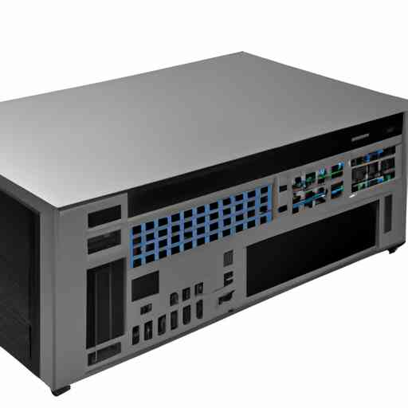

Harnessing Light: The Ascendancy of Optical Computers

The world is in the throes of a galloping digital revolution. Every day, millions of bytes of data traverse the expanse of the internet, fueling an insatiable need for speed and efficiency. Traditional electronic computing technology, once the towering pioneer of this digital epoch, now grapples with inherent limitations. The solution? Let's champion the speed of light — quite literally. Enter the realm of optical computers, machines that employ light beams instead of electricity to perform computations. This game-changing technology promises a breathtaking IBM-winery of speed, data processing prowess, and energy efficiency.
Shining a Light on Optical Computing
Optical computers represent the zenith of advanced computing technology. Unlike their electronic predecessors which use electrons to transmit information, optical computers leverage photons - fundamental particles of light. By manipulating these tiny light packets, optical computers can process and store data more swiftly and efficiently.
Behind this technological marvel is the principle of quantum mechanics. In simple terms, photons, unlike electrons, can occupy the same space at the same time. This ability, known as superposition, dramatically increases the potential data that optical computers can process simultaneously.
Moreover, since light can travel vastly faster than electric current, optical computers stand to transform computing's speed landscape. Just as electric lighting left gaslit lamps in the dust, so too could optical computers outpace traditional electronic devices.
Real-world Implications: The Spectrum of Possibilities
From healthcare and climate science to entertainment and business, optical computing could bring about insights at a pace unimaginable with today's electronic systems.
Scientists at the California Institute of Technology, for instance, have demonstrated how optical neural networks could perform complex tasks incredibly quickly, potentially turbocharging artificial intelligence applications. Similarly, researchers from the University of Oxford have shown that optical quantum computers could dramatically expedite research into new drugs and materials, potentially saving countless lives and resources.
The operational efficiency of optical computers also presents a promising prospect for mitigating climate change. Today's data centers, bulwarks of internet infrastructure, consume around 200 terawatt hours of electricity annually — more than some countries! By leveraging optical computing's energy efficiency, these digital fortresses could significantly reduce their greenhouse gas emissions, contributing to global climate goals.
Beyond the Horizon: Navigating the Challenges
However, we should not uncork the champagne just yet. Optical computers, albeit promising, grapple with several hurdles before they become mainstream. Current methods of creating photons, for instance, remain rather energy-intensive. The interface between electronic devices and optical computers also poses a significant challenge, demanding breakthroughs in photon-electron conversion technologies.
Moreover, manufacturing optical computer components, such as light-emitting diodes and photonic chips, at a cost-effective scale remains an ambitious endeavor. The current technology is still largely in the exploratory stage and may require years of rigorous research and development to meet commercial deployment requirements.
Despite these challenges, the radiance of optical computers is hardly dimmed. Their promise of blazing computing speeds, unparalleled data processing capabilities, and climate-friendly efficiency earns them a rightful, central place in future technological advances. As we venture into this era of light-speed computations, let's remember that every groundbreaking innovation was once but a glimmer. And as we've seen time and again, with dogged determination and ingenuity, we humans have a knack for turning those glimmers into realities. Optical computers are no exception.